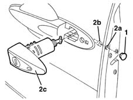
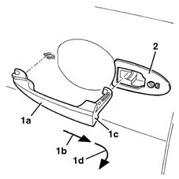

7005C11 front side door outside handle r r
- Path
- Procedures > 70 FITTINGS > 7005 PASSENGER COMPARTMENT FRONT SIDE DOORS > 7005C front lock controls > 7005C11 front side door outside handle r r
- Kind
- repair procedure (removal / refitting; the operation number is the code)
- Applies to
- all engines; all production periods
- Interactive page
- https://sloeber94.github.io/elrnDB-lYpsln/en/#/2429488
Applies to: all engines; all production periods
 Removing
Removing
 Refitting
Refitting1. Release the cover from the opening.
2. Working via the opening (2a), loosen the inner bolt (2b) in order to be able to release the lock barrel (2c).

Applies to: all engines; all production periods
1. Remove the outer handle (1a) pulling it backwards as illustrated by the arrow (1b) and then turning the rear part (1c) towards the outside as shown by the arrow (1d).
2. Keep the seal.

Applies to: all engines; all production periods
Refitting
RemovingCheck that the handle and the seal are not damaged.
Position the gasket.
Fit the handle in position from the back and push it forwards until it is in the correct position.
Position the lock barrell, tighten the bolt and refit the cover.